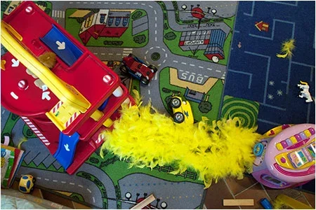

Amicale Laïque de Bacalan
Soutenir l'école publique et animer la vie locale
Expression de chacun et chacune, épanouissement
pour tous
Au quotidien
L'amicale anime un lieu de proximité ouvert à toutes et tous, fondé sur les valeurs de
solidarité et de partage. Elle met à disposition des espaces et des services favorisant
l’entraide et l’autonomie des habitants : coin jeux pour les enfants, espace livres, accès à
l’informatique, à l’impression, ainsi qu’un espace d’échange gratuit où chacun peut déposer ou trouver
vêtements propres, livres, jouets ou objets du quotidien. Un point d’information sur la vie du quartier
complète ces actions dans l'optique de renforcer le lien social et la participation active des habitants
à la vie locale.
Coin enfants
